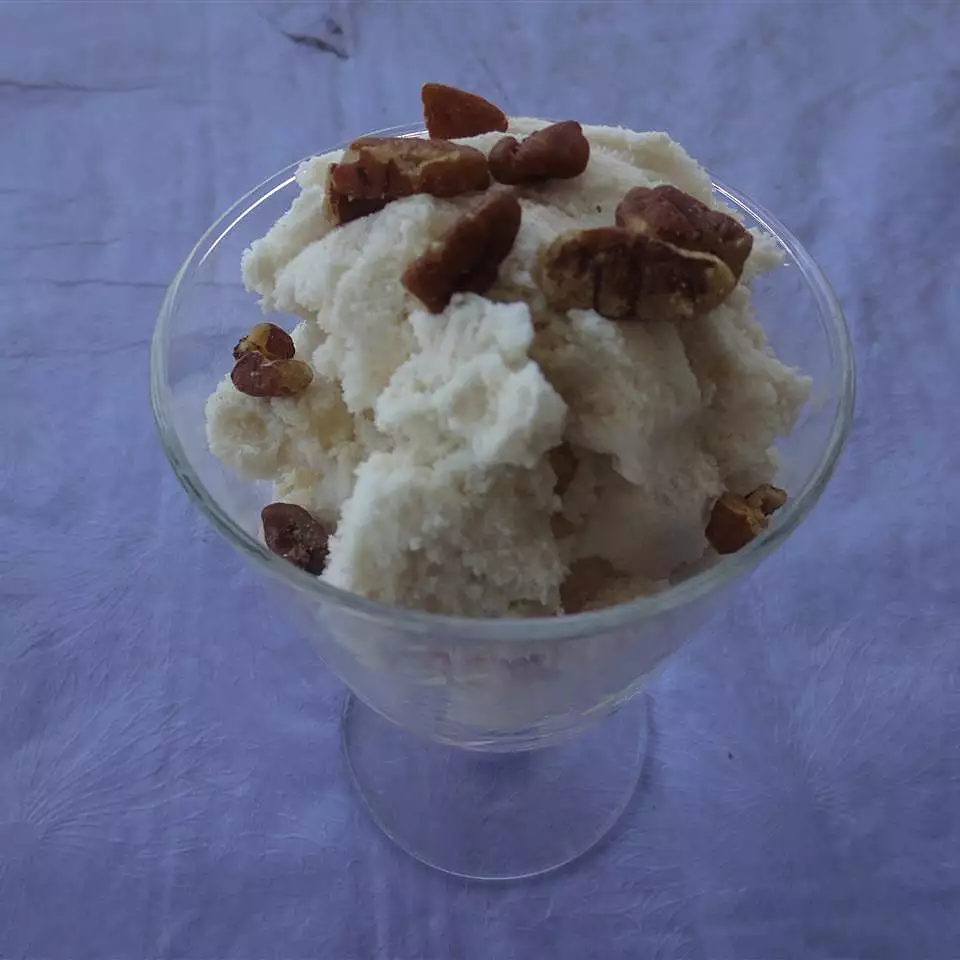

Ice Cream in a can

Description
Homemade ice cream that is easy to make with a great taste. With just a small and large coffee can you can create a ice cream maker yourself. A fun project with a sweet reward.
Ingredients
- 1 pasteurized egg
- 1/2 cup white sugar
- 1 tablespoon instant vanilla pudding mix
- 1 cup milk
- 1 cup half-and-half cream
- 1 teaspoon anilla extract
- 1 cup rock salt
- 1 pound crushed ice
Steps
- In a medium bowl, whisk together the egg, sugar, instant pudding, milk, half-and-half and vanilla.
- Next pour the mixture into a 12 ounce size coffee can. Cover the top with plastic wrap, and then the plastic lid.
- Place the can into an empty 34.5 ounce coffee can and fill the empty space with crushed ice, sprinkle the ice with rock salt then cover with the plastic lid.
- Roll the cans around on the floor for about 20 minutes and it should be done. If the center of the ice cream is still soft, place the containers in the freezer to harden.